Panduan akun demo dan penggunaan Sempat
Aplikasi web pendukung keputusan untuk menguji apakah warga di setiap sel permukiman Kota Bengkulu sempat mencapai tempat evakuasi sementara (TES) sebelum gelombang tsunami tiba.
Alamat aplikasi{{URL}}
Sempat v1.0 · mesin hitung 1.0.0{{TANGGAL}}
Bagian 1
Akun demo
Gunakan salah satu akun berikut untuk mencoba aplikasi. Kedua akun memakai data contoh yang sama, jadi perubahan dari satu pengguna dapat terlihat oleh pengguna lain.
Demo AnalisDisarankan untuk penilai
Surel
demo.analis@sempat.demo
Kata sandi
DemoAnalis2026
Peran
Analis — semua fitur kecuali kelola akun dan log audit
Demo PenelitiAkses terbatas
Surel
demo.peneliti@sempat.demo
Kata sandi
DemoPeneliti2026
Peran
Peneliti — jalankan skenario dan uji intervensi; tidak dapat menerbitkan data atau membuat tautan publik
Hak akses menurut peran
| Fitur | Admin | Analis | Peneliti | Tamu (tautan publik) |
|---|
| Kelola akun dan peran, log audit | Ya | Tidak | Tidak | Tidak |
| Impor dan validasi data | Ya | Ya | Ya | Tidak |
| Terbitkan versi dataset | Ya | Ya | Tidak | Tidak |
| Buat dan jalankan skenario, uji intervensi | Ya | Ya | Ya | Tidak |
| Lihat peta dan indeks hasil | Ya | Ya | Ya | Ya |
| Ekspor laporan dan data | Ya | Ya | Ya | PDF ringkasan |
| Buat tautan publik | Ya | Ya | Tidak | Tidak |
Server bisa sedang tidur. Aplikasi berjalan di paket gratis Render. Bila tidak diakses selama 15 menit, server tidur dan butuh sekitar 1 menit untuk bangun pada akses berikutnya. Tunggu, lalu muat ulang halaman.
Data contoh, bukan data resmi. Peta, jalan, TES, dan penduduk dalam aplikasi adalah data sintetis yang meniru bentuk Kota Bengkulu, dibuat agar seluruh alur dapat dicoba. Angka hasil tidak menggambarkan kondisi lapangan.
Sempat · Panduan akun demo2
Bagian 2
Cara Sempat menghitung
Satu rumus menjadi inti sistem. Sisa waktu sama dengan waktu tiba gelombang dikurangi jeda respons dan waktu tempuh ke TES terdekat lewat jaringan jalan.
m = Tₐ − (τ + d / 60v)
| Simbol | Arti | Nilai awal |
|---|
| Tₐ | Waktu tiba gelombang | 20 atau 25 menit |
| τ | Jeda respons: waktu sebelum warga mulai bergerak | 0, 5, atau 10 menit |
| d | Jarak terpendek lewat jalan dari sel ke TES terdekat | dihitung (meter) |
| v | Kecepatan: jalan kaki atau kendaraan, dikali faktor malam | 1,09 / 2,49 m/detik |
| b | Margin pengaman | 2 menit |
Empat kelas sisa waktu
| Cukup | m ≥ b — sempat dengan cadangan waktu |
| Rawan | 0 ≤ m < b — sempat, tetapi tidak tahan galat parameter |
| Terlambat | m < 0 — tidak sempat; masuk daftar intervensi |
| Terputus | Tidak ada jalur jalan ke TES; perlu perbaikan data |
Indeks kecukupan (IK) adalah porsi penduduk di zona genangan yang termasuk Cukup atau Rawan. Indeks dihitung per kecamatan, per kelurahan, dan untuk seluruh kota.
Sempat bukan sistem peringatan dini, tidak memprediksi tsunami, dan tidak memberi arahan rute kepada warga. Hasilnya adalah uji kecukupan pada skenario terpilih untuk mendukung kajian BPBD.
Sempat · Cara menghitung3
Bagian 3 · Langkah penggunaan
1
Masuk
Buka alamat aplikasi, isi surel dan kata sandi akun demo, lalu tekan Masuk.
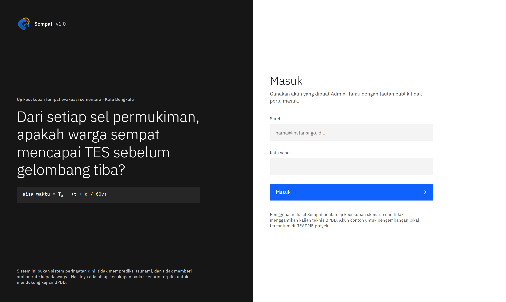
Halaman masuk. Bagian kiri menjelaskan pertanyaan yang dijawab aplikasi.
2
Baca dasbor
Dasbor menampilkan dataset yang terbit, IK kota dari hasil terakhir, peringatan kualitas data, dan panduan empat langkah untuk pengguna baru.
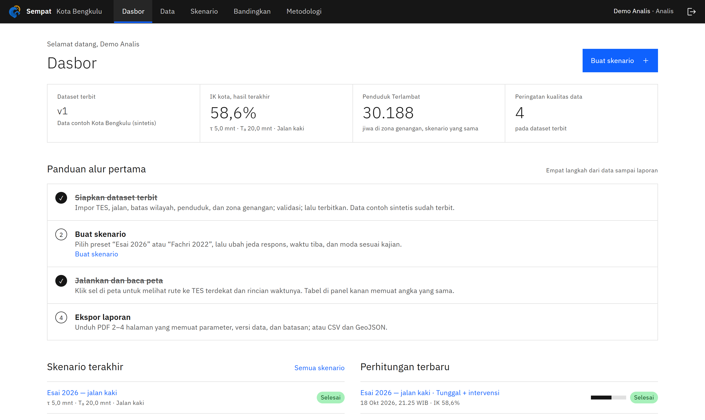
Sempat · Langkah 1–24
3
Periksa data
Menu Data berisi enam jenis berkas: TES, jaringan jalan, batas wilayah, penduduk, zona genangan, dan sirene. Data contoh sudah diimpor dan diterbitkan, jadi langkah ini cukup dilihat.
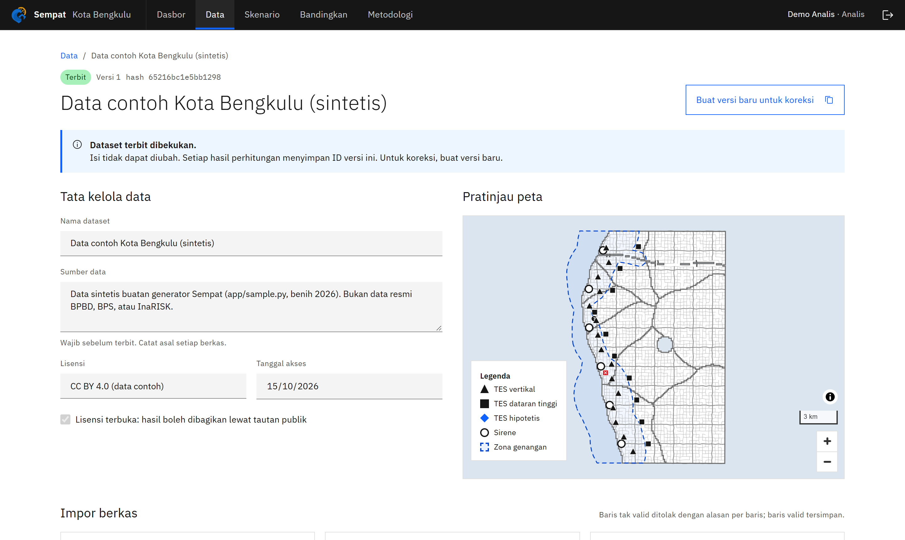
Tata kelola data (sumber, lisensi, tanggal akses) dan pratinjau peta.
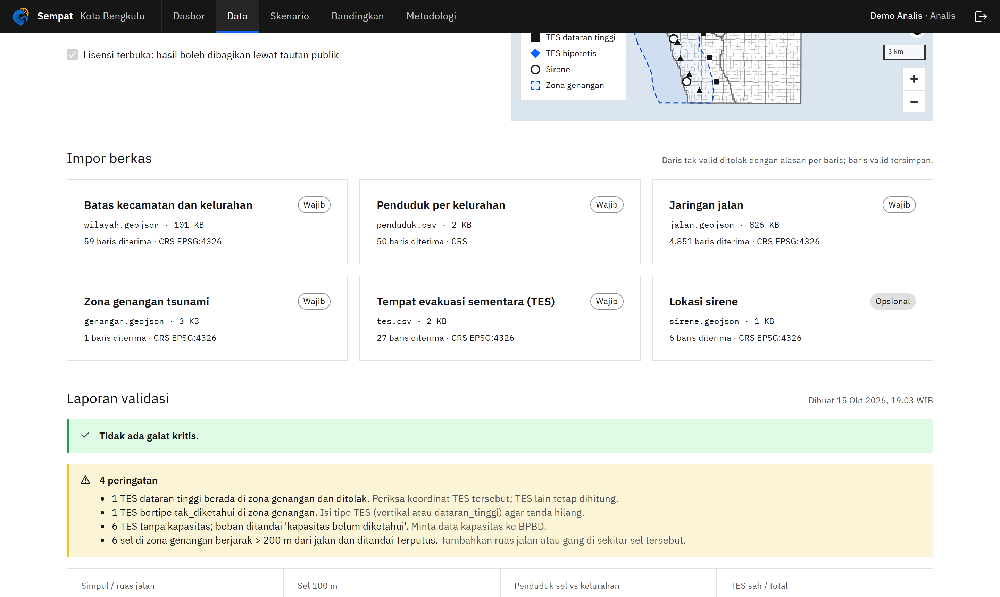
Laporan validasi otomatis. Dua TES contoh sengaja salah agar pemeriksaan terlihat: TES dataran tinggi di zona genangan ditolak, dan TES tanpa tipe diberi tanda.
Sempat · Langkah 35
4
Buka atau buat skenario
Menu Skenario berisi dua preset: Esai 2026 (jeda 5 menit, gelombang 20 menit) dan Fachri 2022 (jeda 0, gelombang 25 menit). Tekan Buat skenario untuk membuat skenario sendiri, atau klik nama skenario untuk membuka editornya.
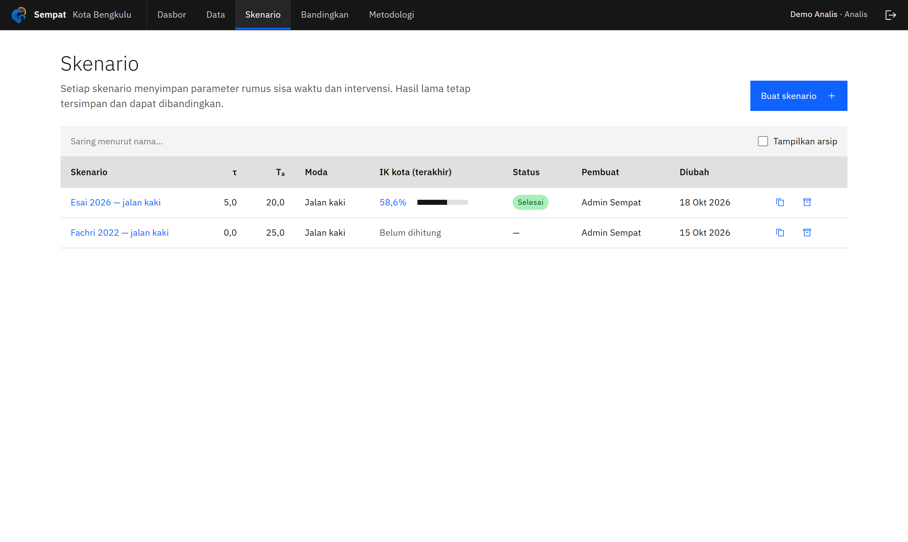
Daftar skenario dengan IK hasil terakhir.
5
Atur parameter, lalu jalankan
- Ubah jeda respons τ, waktu tiba Tₐ, moda, kondisi malam, dan margin pengaman di panel kanan.
- Tekan Jalankan skenario dasar. Perhitungan selesai dalam kurang dari satu detik.
- Peta di kiri langsung berwarna menurut kelas sisa waktu.
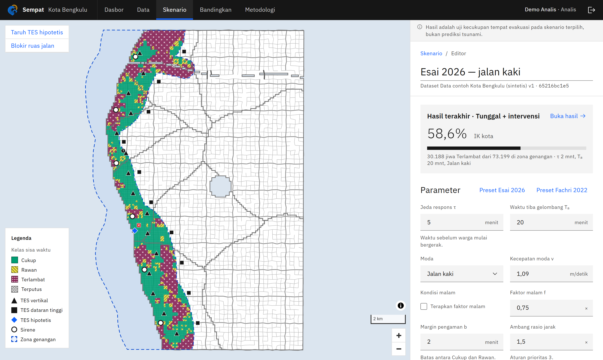
Sempat · Langkah 4–56
6
Baca peta hasil
Layar hasil memperlihatkan IK kota, jumlah penduduk per kelas, dan tabel IK per kecamatan atau kelurahan. Parameter yang membentuk peta selalu tertulis di pojok kanan atas peta.
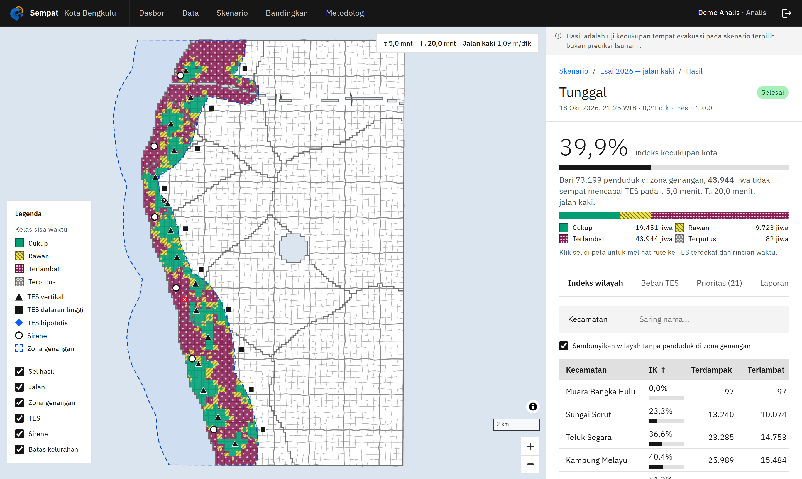
7
Klik sel untuk melihat rute
Klik sel berwarna mana pun. Peta memperbesar ke rute terpendek menuju TES terdekat, dan panel kanan menampilkan rincian rumusnya: jarak, waktu tempuh, dan sisa waktu.
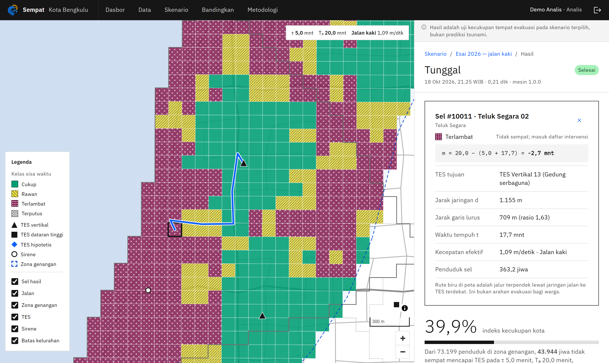
Sempat · Langkah 6–77
8
Lihat prioritas dan beban TES
Tab Prioritas mengurutkan kelurahan menurut jumlah penduduk Terlambat. Setiap kelurahan mendapat satu rekomendasi utama (tambah TES atau percepat respons) dan beberapa penanda. Buka Syarat yang terpenuhi untuk melihat aturan dan angka yang memicunya.
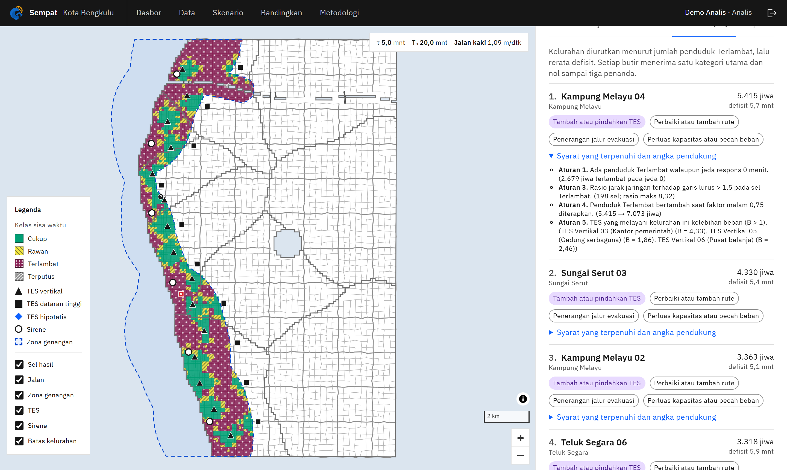
Daftar prioritas dengan alasan per aturan.
Tab Beban TES membandingkan penduduk yang menuju tiap TES dengan kapasitasnya. Beban di atas 1 ditandai merah.
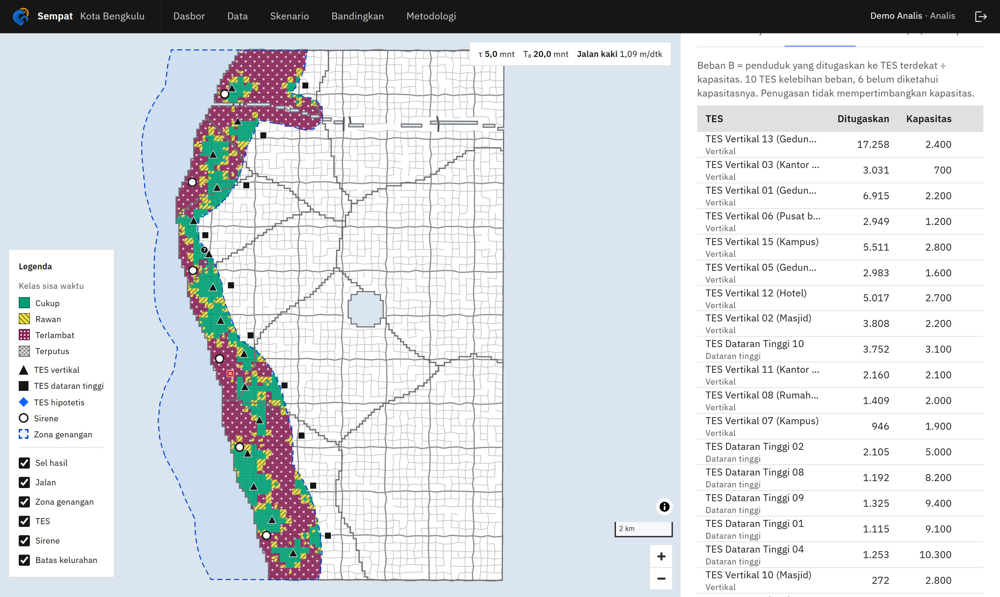
Sempat · Langkah 88
9
Uji intervensi
Di editor skenario, gunakan alat di pojok kiri atas peta:
- Taruh TES hipotetis — klik lokasi di peta, isi nama dan kapasitas.
- Blokir ruas jalan — klik ruas, misalnya jembatan yang putus.
- Percepat respons — isi berapa menit jeda dapat dipangkas lewat sirene atau latihan.
Lalu tekan Uji intervensi terhadap dasar.
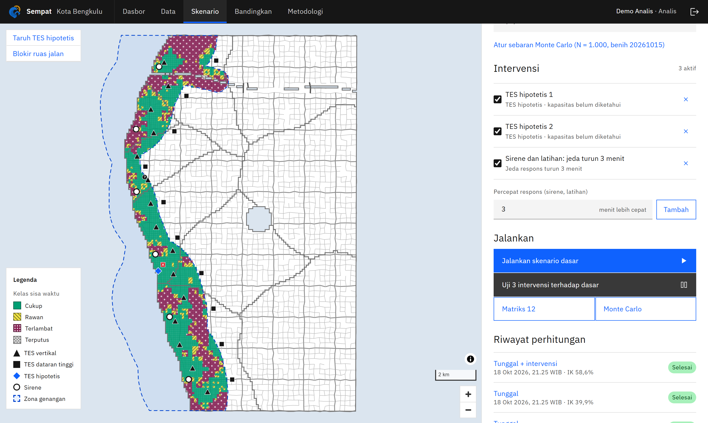
Daftar intervensi aktif dan tombol untuk mengujinya terhadap skenario dasar.
Sempat · Langkah 99
10
Bandingkan hasilnya
Layar Bandingkan menampilkan dua peta yang bergerak bersamaan, selisih IK, dan jumlah penduduk yang berpindah dari Terlambat ke Sempat.
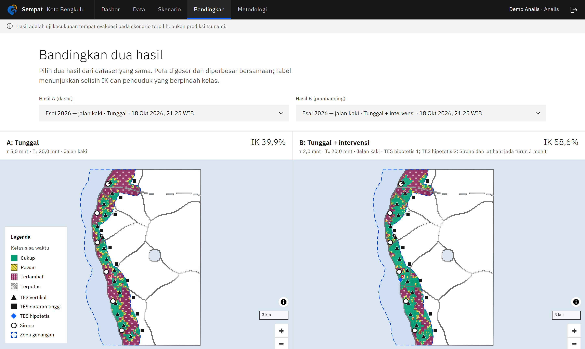
Contoh: intervensi pada skenario Esai 2026 menaikkan IK kota dari {{IK_A}} menjadi {{IK_B}} pada data contoh.
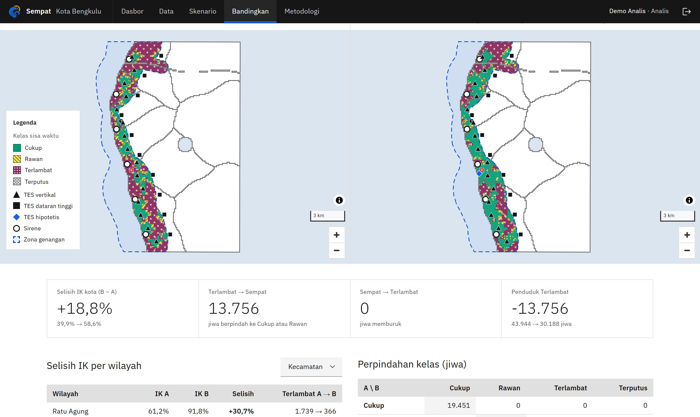
Selisih IK per kecamatan dan matriks perpindahan kelas penduduk.
Sempat · Langkah 1010
11
Unduh laporan dan bagikan
Tab Laporan menyediakan PDF 4 halaman (parameter, versi data, peta, indeks, prioritas, beban TES, batasan), CSV, dan GeoJSON. Akun Analis juga dapat membuat tautan publik baca-saja untuk warga atau relawan; tautan ini dapat dibuka tanpa akun.
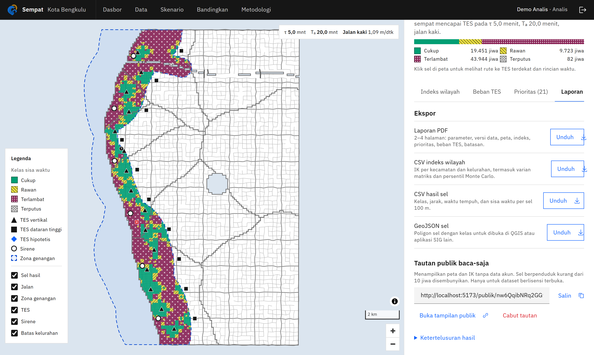
12
Baca metodologi
Menu Metodologi memuat rumus, sumber setiap parameter beserta status kalibrasinya, aturan prioritas, dan keterbatasan sistem.
Keterbatasan versi 1.0
- Semua ruas jalan dianggap dua arah; kemacetan dan kemiringan tidak dimodelkan.
- Penduduk dalam satu sel dianggap merata. Penugasan memakai TES terdekat tanpa memperhitungkan kapasitas.
- Kecepatan, jeda, dan faktor malam masih perlu dikalibrasi bersama BPBD.
Sempat · Langkah 11–1211